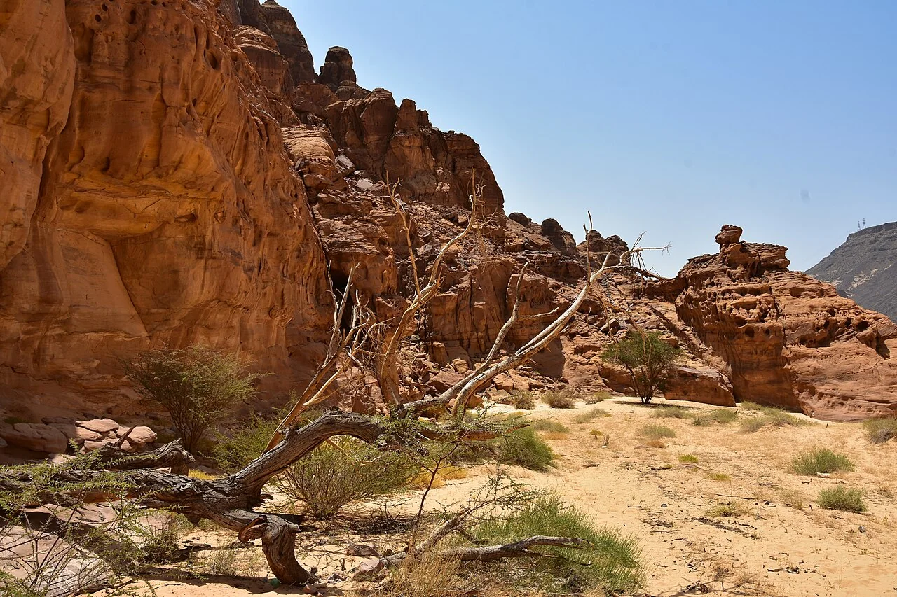
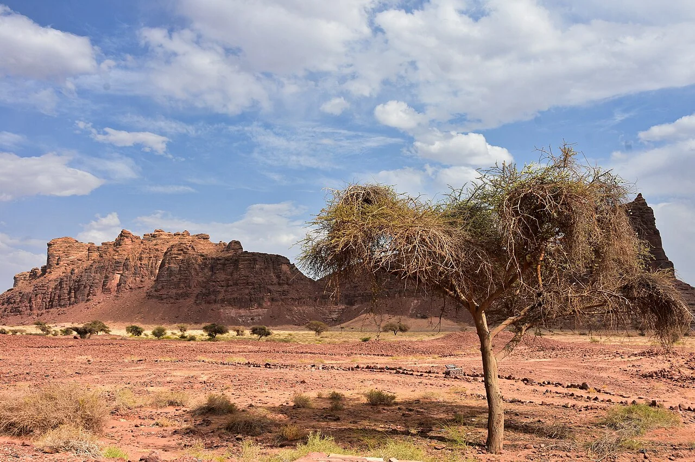
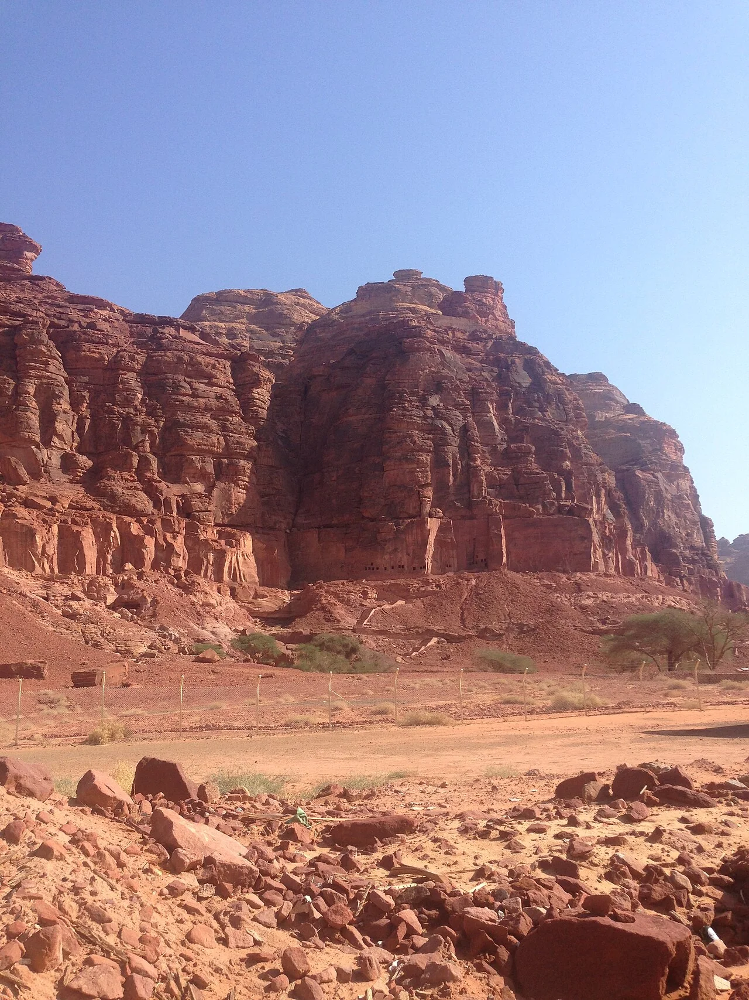
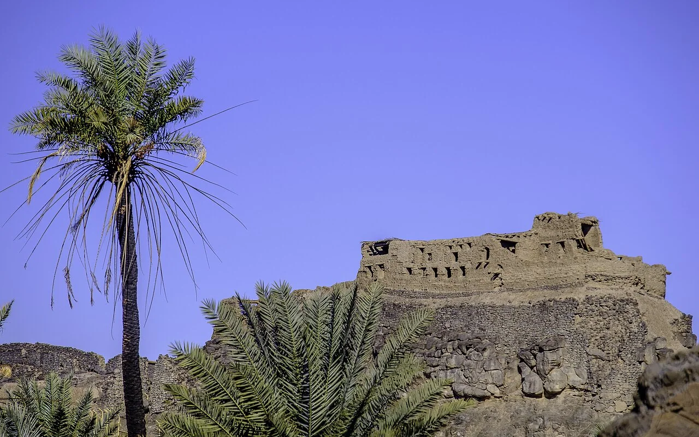
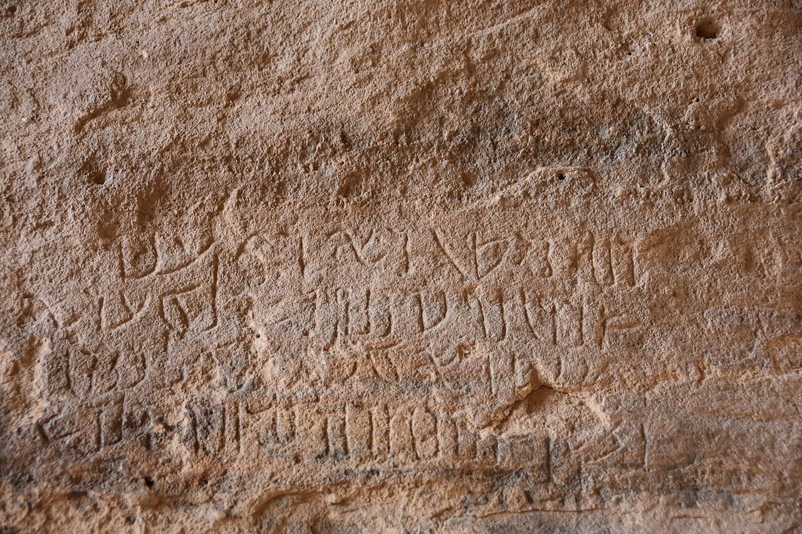
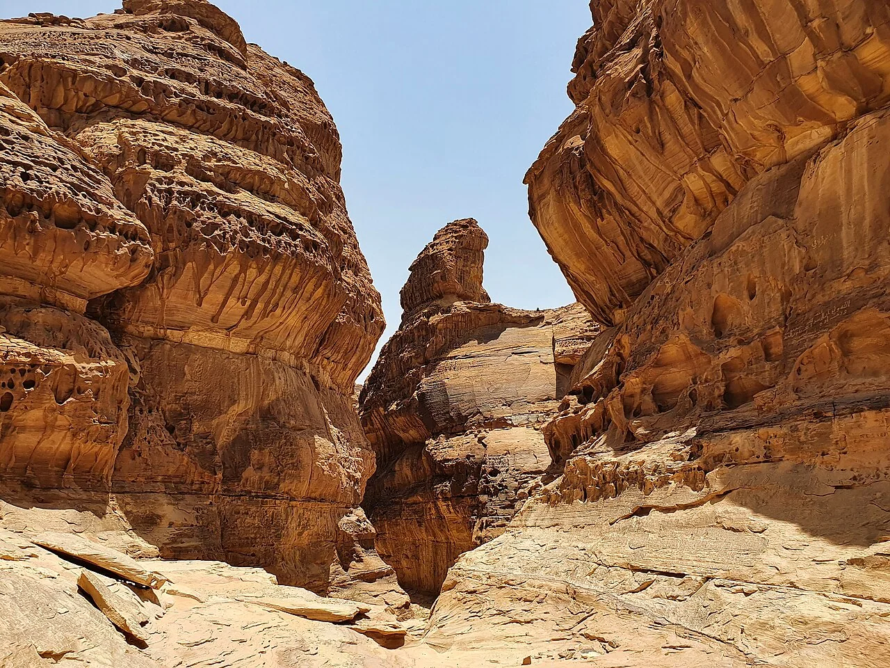
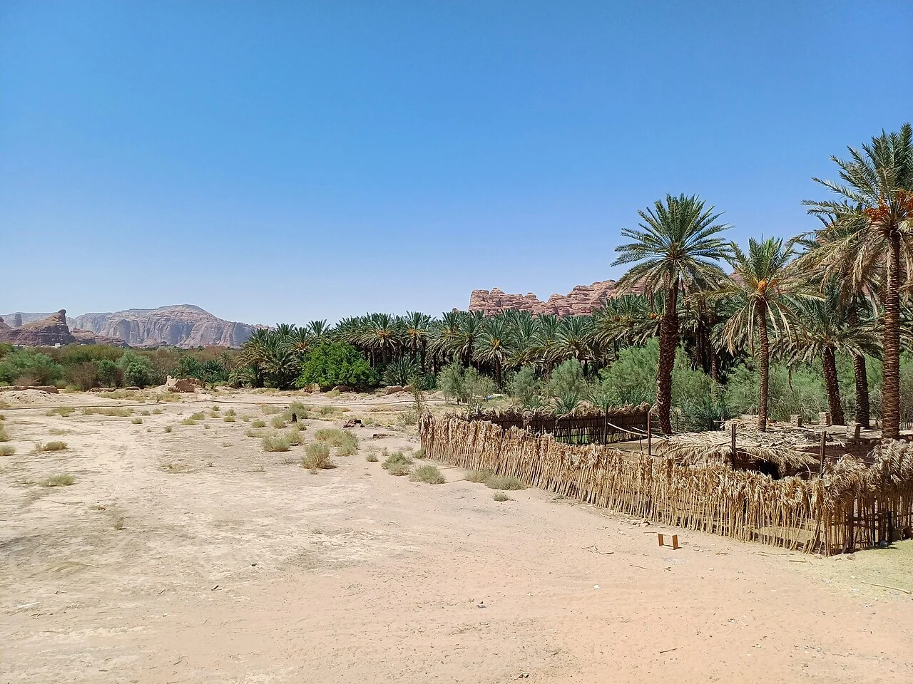
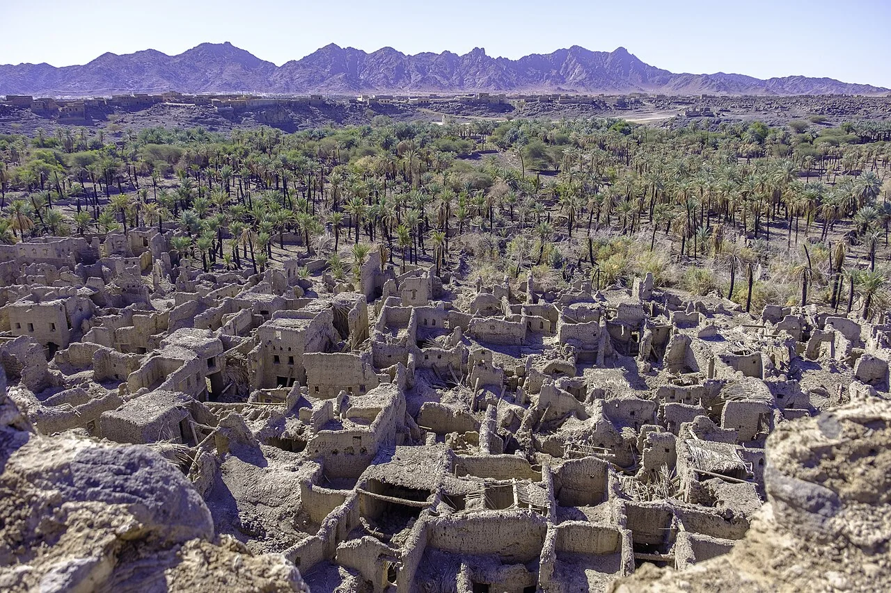

أسرار العُلا وخيبر: حضارات عمرها آلاف السنين بدأت تكشف أسرارها
في شمال غرب الجزيرة العربية، تكشف خطوط الحجر عن طقوس عمرها سبعة آلاف عام، وأسوار تحيط بواحات، وبلداتٍ عرفت الاستقرار قبل آلاف السنين. ماذا تقول لنا اكتشافات 2026؟
الصحراء التي لم تكن فارغة
من الجو، تبدو الحرات البركانية في شمال غرب الجزيرة العربية مساحات داكنة متصلة، تتخللها خطوط حجرية قد لا يلاحظها العابر على الأرض. لكن حين تتبع فرق البحث هذه الخطوط، تتضح أشكال مستطيلة ضخمة ومسارات وبقايا مستوطنات. ليست الصحراء صفحة بيضاء؛ إنها سجلّ بشري طويل كُتب بالحجر. والسؤال الذي يقود هذه القصة ليس من شيّد أثرًا واحدًا، بل كيف عاش الناس هنا عبر آلاف السنين، وكيف تغيّرت علاقتهم بالماء والأرض والتجارة.
موسم 2026–2027: لماذا يعود الباحثون؟
في أكتوبر 2026 أعلنت الهيئة الملكية لمحافظة العُلا انطلاق موسم ميداني جديد يشمل العُلا وخيبر. الخبر ليس اكتشاف مدينة كاملة في يوم واحد، بل بدء سلسلة من أعمال المسح والحفر والتوثيق والترميم والتحليل. يدرس الباحثون آثار عصور ما قبل التاريخ والممالك القديمة والواحات وطرق الحج والتجارة. وتُقرأ القطع الصغيرة—فخار، عظام، بقايا نباتية، قنوات مياه—مع المباني الكبرى؛ لأن تفاصيل الحياة اليومية قد تجيب عن أسئلة تعجز عنها الواجهات الحجرية وحدها.

المستطيلات: طقوس عمرها نحو سبعة آلاف سنة
في أرجاء العُلا وخيبر تظهر منشآت حجرية طويلة مستطيلة عُرفت باسم «المستطيلات». كشفت دراسات ميدانية عن مداخل وحجرات وأجزاء معمارية معقدة، وعن بقايا حيوانية ساعدت الباحثين في تفسير بعض المنشآت بوصفها مواقع طقسية. يرجع تاريخ تقليد بناء المستطيلات عمومًا إلى أواخر الألف السادس قبل الميلاد، مع نقاش علمي مستمر حول فترات استخدامها المختلفة. لا نعرف على وجه اليقين كل معتقدات بناة هذه المنشآت، ولا يصح اختزال جميعها في وظيفة واحدة دون أدلة.

خيبر: بلدة النطاة خلف الأسوار
بعد آلاف السنين من أقدم المستطيلات، تظهر في واحة خيبر قصة أخرى. كشفت أعمال مشروع «خيبر على المدى الطويل» عن بلدة محصّنة من العصر البرونزي تُسمى «النطاة»، يعود تاريخها تقريبًا إلى 2400–1300 قبل الميلاد. ميّز الباحثون مناطق للسكن وأخرى للأنشطة الإدارية والدفن. وترتبط البلدة بمنظومة أسوار واسعة حول الواحة. تكمن أهمية النطاة في أنها تقدّم دليلًا ملموسًا على مجتمعات مستقرة ومنظمة في منطقة طالما صُوّرت بصورة مبسطة على أنها فضاء للرعي والترحال فقط.

السور الذي يروي قصة الماء
تصف الهيئة الملكية لمحافظة العُلا تحصينات خيبر القديمة بأنها امتدت قرابة خمسة عشر كيلومترًا، مع أجزاء باقية وأبراج دفاعية متعددة. لا يخبرنا السور عن الحرب وحدها؛ فالواحة أرض ثمينة تحيط بها بيئة قاسية. حمايتها قد تعني حماية الزراعة والموارد ومسارات الوصول إليها. لكن تفسير دوافع بناء الأسوار يتطلب الجمع بين التأريخ والتحليل المكاني والأدلة الأثرية، لا الافتراض أن كل جدار بُني لصد هجوم معروف.
دادان ولحيان: حين أصبحت الواحة مركزًا للسلطة
في وادي العُلا، ازدهرت مراكز سياسية وتجارية ارتبطت بمملكتي دادان ولحيان في الألف الأول قبل الميلاد. تشير النقوش والقبور المنحوتة وبقايا العمران إلى مجتمع متصل بطرق التبادل في شمال الجزيرة العربية. والبحث الجاري في دادان لا يقتصر على الملوك؛ فهو يحاول إعادة بناء حياة الناس، من المنازل إلى المقابر، ومن النشاط الاقتصادي إلى أنماط الاستيطان. تتيح هذه الصورة فهم الواحة باعتبارها موطنًا طويل العمر، لا محطة عابرة على طريق قوافل.

الحِجر: خلف الواجهات النبطية
تجذب المقابر النبطية المنحوتة في الحِجر الأنظار بواجهاتها الصخرية الضخمة، لكن الباحثين ينظرون أيضًا إلى مركز الاستيطان والواحة المحيطة. ما الذي كان يُزرع؟ كيف كانت تُدار المياه؟ ماذا تكشف بقايا الطعام والأواني عن حركة الناس وتواصلهم؟ لا تُختزل حضارة كاملة في قبورها. لذلك يواصل موسم الآثار الجديد دراسة الطبقات والبقايا العضوية واللقى الصغيرة التي تربط العمارة المذهلة بالحياة اليومية.

النقوش: أصوات من عاشوا هنا
تذكر التقارير المرتبطة بموسم التنقيب توثيق أكثر من خمسة وعشرين ألف نقش في العُلا. ليست جميعها من فترة واحدة أو بلغة واحدة، لكن مجموعها يفتح نافذة على الأسماء والعبادات واللغات والصلات الاجتماعية. تحتاج قراءة النقش إلى معرفة بالخط واللغة والسياق والمكان الذي عُثر فيه عليه. لذلك لا تكفي صورة واضحة للحروف كي نفهم حياة صاحبها كاملة؛ بل تتكامل الكتابة مع الأدلة المادية الأخرى.

ما بين دادان وبدايات الإسلام
في دراسة نُشرت عام 2025، عرض باحثون نتائج تنقيبات قرب دادان كشفت عن استيطان يعود إلى أواخر القرن الثالث أو أوائل الرابع الميلادي واستمر إلى النصف الأول من القرن السابع. عُثر على مبانٍ وساحات وبئر وقنوات ومؤشرات على الزراعة والتخزين. تكمن أهمية النتيجة في أنها تسد جزءًا من فجوة معرفية كانت تجعل تاريخ المنطقة بين العهد النبطي وبدايات الإسلام أقل وضوحًا. ليست الفجوة دليلًا على غياب البشر؛ أحيانًا تعني فقط أن الأدلة لم تُكتشف أو تُدرس بعد.

ما الذي لم نعرفه بعد؟
لا يزال الباحثون يختبرون تسلسل بناء المستطيلات ووظائفها، وعلاقات بلدات الواحات بمجموعات الرعاة المتنقلين، وكيف تبدلت شبكات الماء والتجارة عبر القرون. وقد تُغيّر نتائج التحليل المخبري والتأريخ بالكربون المشع والاستشعار عن بعد تفسيرات تبدو اليوم معقولة. هذا هو جوهر علم الآثار: لا تُعلن القصة مكتملة لمجرد العثور على بناء مذهل؛ بل تبدأ أسئلة جديدة كلما ظهرت طبقة أقدم.
العودة إلى الأرض، لا إلى الأسطورة
حين يبدأ موسم تنقيب جديد في العُلا وخيبر، لا يعد العلماء بالعثور على «سر نهائي» للصحراء. يعدون بشيء أدق وأهم: قياسٍ أفضل، وسياقٍ أوضح، وحفظٍ للأثر قبل أن يتلف، ومساحةٍ للأجيال المقبلة كي تسأل أسئلة لم تخطر لنا بعد. ربما تكون أكثر المفاجآت إثارة أن تاريخ الجزيرة العربية لم يكن هامشًا ساكنًا، بل شبكة معقدة من مجتمعات عرفت كيف تتكيّف وتتبادل وتبني وتترك آثارًا تستحق القراءة.